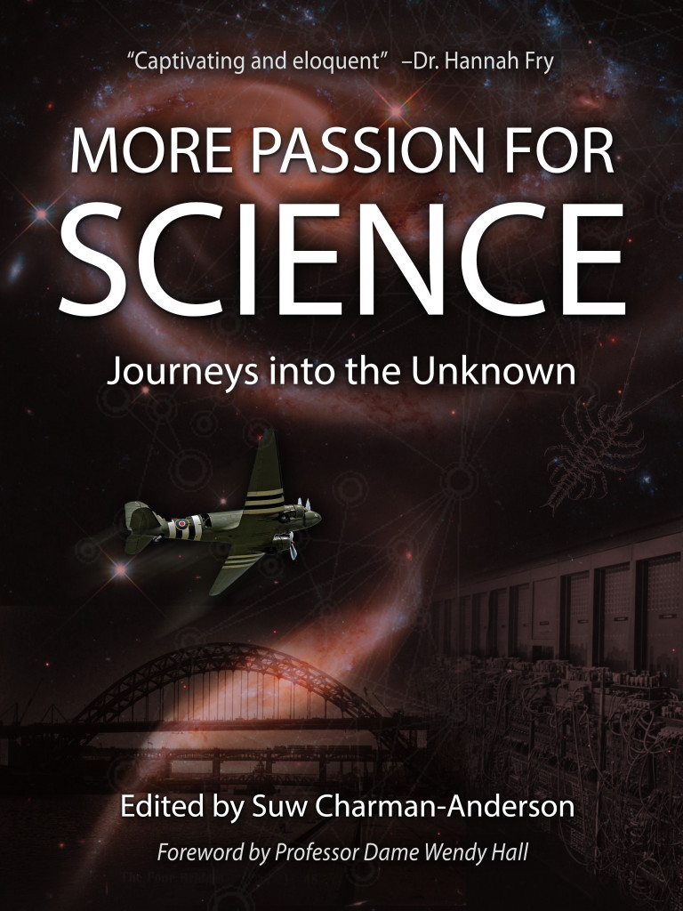

Writing
I enjoy writing about science for a popular audience. You can read my posts on my personal blog “Beautiful Stars“, and also on the Galaxy Zoo Blog, and the Sloan Digital Sky Surveys blog.
To date I have contributed to four published popular science books:

Published 25th April 2024: The Astronomers Library, my first solo-author book with Quarto Publishing. This has some really nice reviews in GoodReads:
- “Masters certainly succeeds in demystifying astronomy with her work by building a collection of the most essential names and works throughout history.”
- “a delight to read as someone who enjoys books and also enjoys astronomy”
- “I love astronomy and I love books, so it makes good sense that I would love a book about astronomy books. Karen Masters delivered in producing a wonderful, richly illustrated collection of the major books in the history of astronomy.”
Teach for the Stars, by Dominic Mercier is an article which ran in the Haverford Alumni Magazine about the book.
A list of events/talks about “Astronomers Library”
- Bullitt Lecture 2024, “Browsing in the Astronomer’s Library”, Univ of Louiville’s Rauch Planetarium and Gheens Science Hall. 10th October 2024.
- Keynote speaker, Libraries of Science, Royal Society, London, 14th March 2025
Published 16th March 2021: 30s Space Travel, my second book with Dr. Charles Liu (this time also with Allen Liu) in the Quarto Publishing Group’s popular “30 Second Book Series“.

While this was a collaborative project in the general pattern of scientific work, the parts I particularly worked on were:
- Destinations Discovered
- Action and Reactions
- Astronautical Calculation
- Biography: Katherine Johnson
- Apollo to the Moon
- The Space Shuttle
- Biography: Sally Ride
- Physical health effects of space travel
- Protecting people from the dangers of space
- Everyday life in space
- The arts in space
- Glossary
Published 1st October 2019: 30s Universe, by Charles Liu, Karen Masters and Sevil Salur. A book in the Quarto Publishing Group’s popular “30 Second Book Series“. Here’s an article on the Haverford Website about my part in this “Karen Masters Explains the Universe“

While this was a collaborative project in the general pattern of scientific work, the parts I particularly worked on were:
- Profile: Henrietta Swan Leavitt
- Ringing the Cosmic Bell: baryon acoustic oscillations
- Light Breaks Free: cosmic microwave background
- Profile: Hypatia
- Matter Bright and Dark: the stuff of the universe, most of which is still a mystery
- Newton’s Laws of Motion: physics is no longer merely earthly – it is universal
- Galaxies: “island-universes,” one of which is our home
- Stars: the primary producers of light in the universe
- Between The Stars: Earth is just a big chunk of the interstellar medium
- Galaxy Crash: hello Andromeda
- Profile: Vera Rubin
- Glossary
Available as an eBook: I wrote a Book Chapter about Mary Somerville, in the book “More Passion for Science; Journeys into the Unknown” which was the second anthology of biographies put out by the Ada Lovelace Day charity. You can read it free at the above link, or purchase the eBook in support of Ada Lovelace Day’s efforts to promote stories of women in science.

You can read about my journey to learning about the awesome Mary Somerville on my blog from 2012, as well as my contributed post on her for the “Speaking Up for Us Blog“.